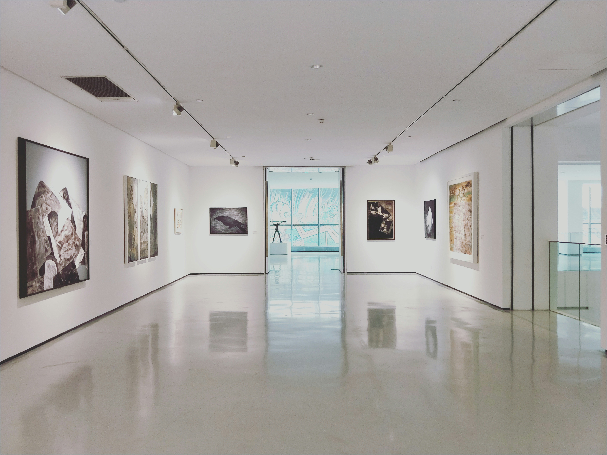
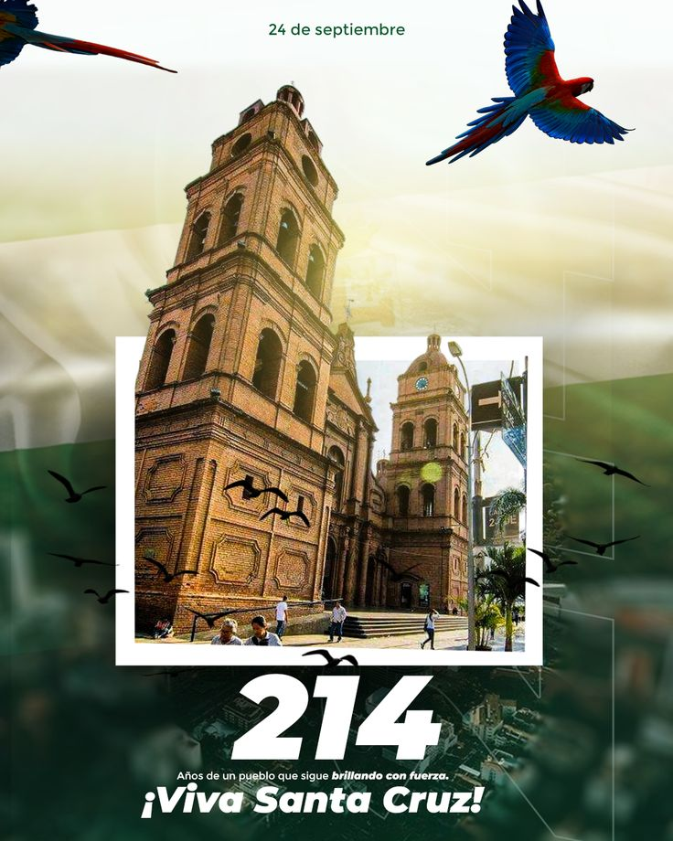
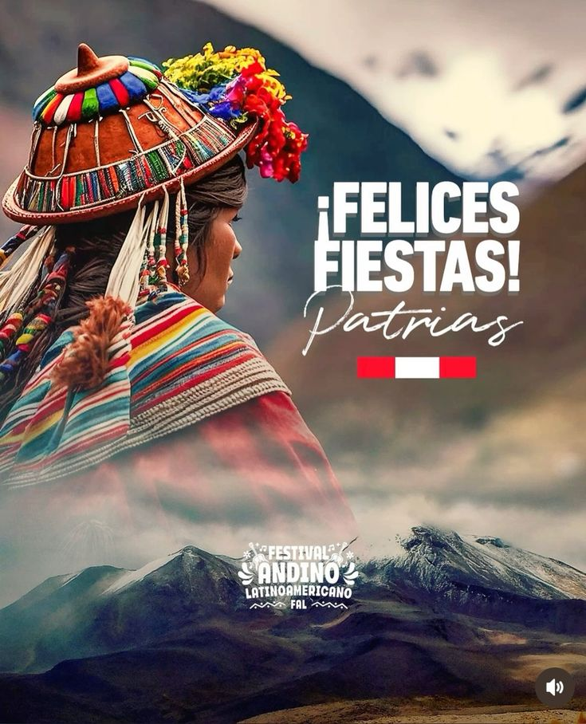

La agenda cultural se fortalece con exposiciones, literatura y patrimonio
Instituciones, creadores y gestores impulsan actividades que promueven el arte, la memoria y la participación del público en distintos espacios culturales.

Instituciones, creadores y gestores impulsan actividades que promueven el arte, la memoria y la participación del público en distintos espacios culturales.

Autores y lectores comparten espacios de diálogo en torno al libro y la creación.

Nuevas muestras destacan el trabajo de artistas emergentes y consolidados.